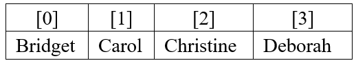

Learning Goals
At the end of this Tutorial, you will be able to:
- Create a function declaration.
- Create a function expression.
- Recognise that function declarations are hoisted but function expressions are not.
- Recognise that function expressions may be unnamed or anonymous.
- Use arrow functions that contain one or multiple statements.
Arrays: When variables are not enough
A variable, as you have learnt, can store a value. Think of a variable as a box, in which you can place a single value. If the variable is mutable (created with let or var keywords), you can change the value in the box at any stage.
You can think of this variable as a single-compartment ‘box:’ that contains just one value.
But suppose you want to store several values in a box? You need a different kind of variable or ‘box:’ an array.
The array or multi-compartment box below has four values.

Each array element has an identifying number known as an index. Index values always begin at zero. An array with 4 elements, for example, has the following index values: [0], [1], [2] and [3].
Naming arrays
You must follow the same rules when naming arrays as you do when naming variables:
- Do not use the same name for two different arrays within the same web page.
- Do not insert spaces within array names.
- To make array names easier to read, you can combine upper and lowercase letters.
- Be aware that array names are case-sensitive: myArray is not the same as myarray.
Arrays in JavaScript are a special type of object. The typeof operator when applied an array will return "object".
Array
A mutable variable that can hold multiple values. Array names follow the same rules as variable names. Each element in an array is identified by an index number, beginning with zero.
The benefit of using arrays is that you can manipulate a large range of values with just a single name and an index number. For example, instead of assigning the twelve months of the year to twelve different variables, you could assign them to a single array.
With arrays, variables can now store datasets.
Creating an array
In JavaScript you can create an array in either of two ways
- Array literal: See the example below:
const userNames = ["Bridget","Carol","Christine","Deborah"];
- The new keyword: See the example below:
const userNames = new Array ("Bridget","Carol","Christine","Deborah");
The above two methods create exactly the same array. In both cases, the individual array elements are separated by commas. Optionally, you can also include spaces with the commas for readability.
Developers generally prefer the array literal method with the const keyword.
Note that using const means the array name cannot be reassigned in the same scope. However, the items in the array may still be changed if required.
As with regular (single value) variables, you can declare an array before initialising (assigning a value) to it. See the example below of creating an empty array.
const userNames = [];
Populating an array
Adding elements to an array is known as populating the array. You can create and populate an array in a single statement as shown below.
const nums = [1,2,3,4,5];
const mixed = new Array("Movie title", 15.99, 2012, null, true);
As you can see, the elements in a array do not need to be of the same data type. Arrays can contain objects, functions and also other arrays. An array that contains another array is called a multi-dimensional array.
The length of an array
Every array has a length property that reveals the number of elements in the array. The syntax is as follows.
array_name.length
Here is a simple example that will output the number 4 to the console.
const fruits = ["Apple", "Pineapple", "Banana", "Grapes"];
console.log("Number of items in fruit array: "+fruits.length);
Reading array contents
How do you read what’s stored in an array? There are two situations when you want to access or ‘get at’ array values:
- When you want to write the values to the browser window, perhaps with a document.write() statement.
The following example writes the 34th index value from the array named email_addr to the browser window.
document.write(“Email Address: "+email_addr[34]+"<br>");
- To copy an element’s value to regular (single-value) variable, use an assignment statement such as the one shown below.
let customer21_id = customer_ids[21];
In the above example, the value of the 21st element in the array named customer_ids is copied to the variable named customer_21. The array remains unchanged.
Here is the syntax for reading the last element in an array.
console.log("Last element"+ fruits.length-1);
Looping through an array with for ... next
Suppose your script contains an array named fruits with six elements. You could write the values of the array‘s six elements to the browser console with six separate console.log() statements as shown below.
console.log("Array Element 0: "+fruits[0]);
console.log("Array Element 1: "+fruits[1]);
console.log("Array Element 2: "+fruits[2]);
console.log("Array Element 3: "+fruits[3]);
console.log("Array Element 4: "+fruits[4]);
console.log("Array Element 5: "+fruits[5]);
That's a lot of typing.
There is an easier way: use a for...next loop containing a single console.log() statement as shown below.
for (i = 0; i <= 5; i++) {
console.log("Array Element "+i+": "+fruits[i]);
}
As you can see, there are six elements in the array. However, the initial value of the counter variable i is set to 0 and the upper value is set to 5.
This is because the array's index numbering runs from [0] to [5] and not from [1] to [6].
To use a for...next loop to access all the values from an array, follow this simple rule:
The number of loop iterations must be the same as the number of elements in the array.
That way a console.log() statement is performed for each individual array element.
But the number of array elements may change during the script, so how can you set the upper value for the counter variable?
The solution is to use the array length property as the upper limit of a for...next loop as follows.
for (i = 0; i < fruits.length; i++) {
console.log("Looping with for ... next: "+fruits[i]);
}
Notice that the comparison operator for the upper value of the counter variable is 'less than' (<) and not 'less than or equal to' (<=).
Why?
Because the array length is always one greater than the index number of the highest array element.
For example, When an array has six elements, its index numbers run from [0] to [5], and its length property contains the value of 6.
Looping through an array with for ... in
There is an ever easier way to loop through the values of an array: the for...in loop. See the example below.
for (i in fruits) {
console.log("Looping with for ... in: "+fruits[i]);
}}
Assigning, modifying and deleting array values
Up to now, you have populated array elements only at the time you created the array. But you can insert values into an array at any stage. The general syntax is as follows.
array_name[index_number] = element_value;
The following code assigns the number 34 to the 20th index position of the array named myArray.
myArray[20] = 34;
You don't need to populate array elements in consecutive order, as in [0], [1], [2], [3], [4] and so on.
Imagine that you have an array called userNames. It contains 10 elements, indexed from [0] to [9]. The following three statements are all valid.
userNames[10] = "Murphy"; userNames[11] = "Jones"; userNames[20] = "Collins";
In other words, JavaScript allows you to have ‘gaps’ or unfilled elements in an array. An array with such non-contiguous values is said to be sparsely populated. JavaScript treats the value of an unfilled array element as undefined.
Modifying array values
You change the value of an array element in exactly the same way as you first assign a value to that element. If your userNames array currently has values at index locations [8], [9] and [56], the following statements overwrite those values with the new ones.
userNames[8] = "Harper"; userNames[9] = "Wallace"; userNames[56] = "Johnson";
Deleting array values
You can remove the contents of an array element with the delete method.
delete userNames[67];
This does not actually delete the element from the array; it just sets its value as undefined. The length property of the array is unaffected.
This way of deleting an element from an array is not recommended.
The pop() and push() methods
Common array methods
The filter method
Use this method to query an array for values that meet certain conditions. The filter() method works as follows:
- It invokes a callback function once for each element in the original array,
- If an element does not meet the query conditions, it is skipped. Indexes with unassigned values or that have been deleted are ignored.
- Values that do meet the query conditions are copied to a new array. The original array is unchanged.
- If no elements meet the query conditions, an empty array will be returned.
Consider the example below.
let nums = [1,2,3,4,5,6,7,8,9,10];
let filteredNums = nums.filter( function (num) {
return num > 6;
});
We can replace this anonymous callback function with a shorter arrow function as follows.
let nums = [1,2,3,4,5,6,7,8,9,10];
let filteredNums = nums.filter( (num) => {
return num > 6;
});
In this example, the query function accepts only a single parameter, contain only one statement, and returns only one value. So we can remove the parenthesis (), the return keyword and the code block {}.
let nums = [1,2,3,4,5,6,7,8,9,10]; let filteredNums = nums.filter( num => num > 6 );
Here is another example of the filter() method in action.
const words = ['spray', 'limit', 'elite', 'exuberant', 'destruction', 'present']; const filteredWords = words.filter(word => word.length > 6);
The following example returns all prime numbers in the array.
orEach() is an iteration method, and it is mainly used for the serial execution of functionality against a list of elements. The forEach() method executes a function once for each item in the array. The method is called on the array object that you wish to manipulate, and the function to call is provided as an argument.
he map(), filter(), and reduce() methods are designed to produce a return value, whether that value is a single object or an array.
In contrast, the forEach() method returns undefined. This can cause negative effects in some cases, such as when trying to chain multiple method calls together. As such, the forEach() method is generally used to perform serial execution of a function against a list of inputs.